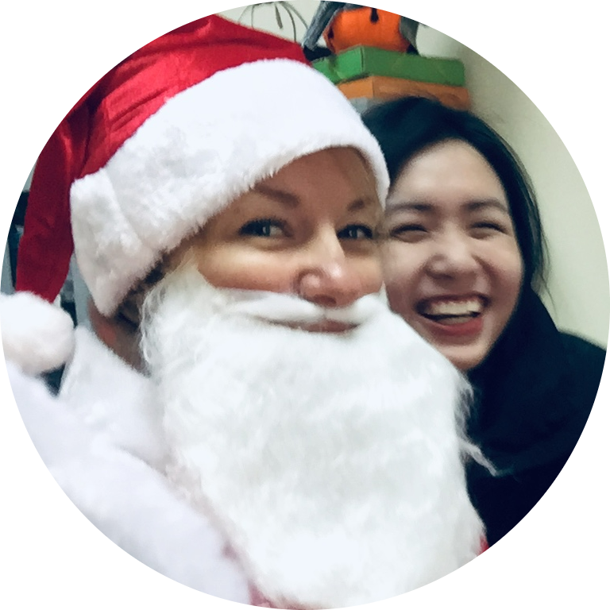

|  |
Kate Hyrenko
ESL Teacher
ESL Teacher with over ten years of experience. Successful in designing engaging lesson plans and integrating educational technology to drive retention, comprehension, and participation. Accomplished in cultivating long-term relationships
with students and working in fast-paced academic environments. Highly skilled at motivating students through positive encouragement and reinforcement of concepts via interactive classroom instruction and observation. Successful in helping
students develop strong literacy, numeracy, social, and learning skills.
|